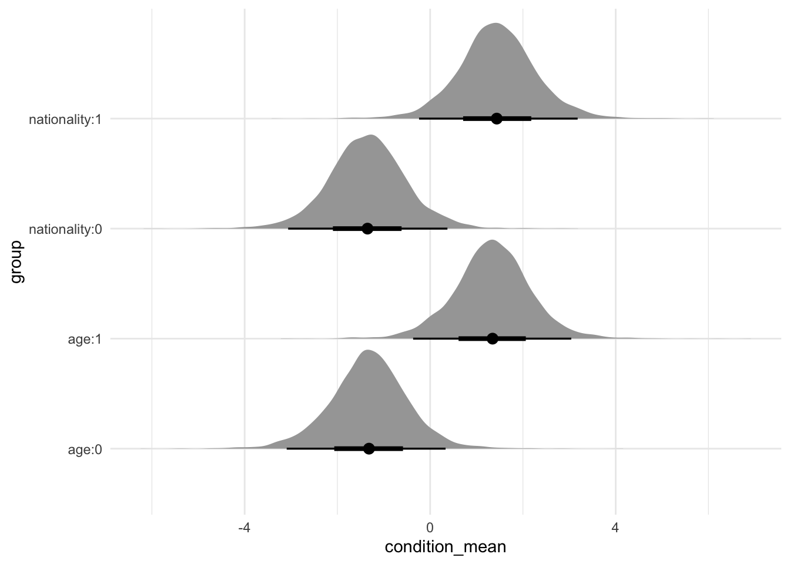
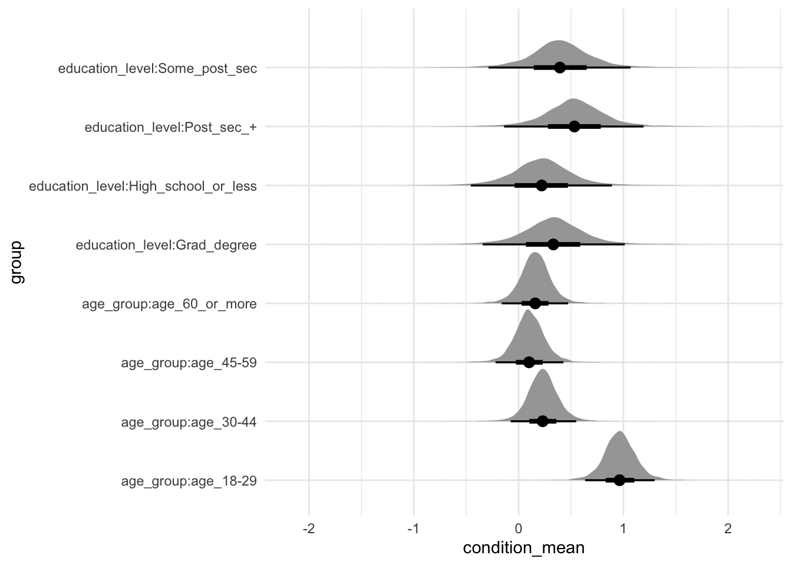
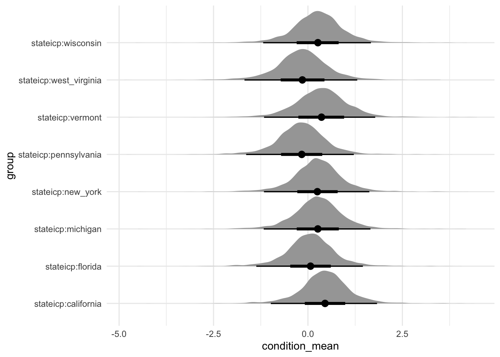
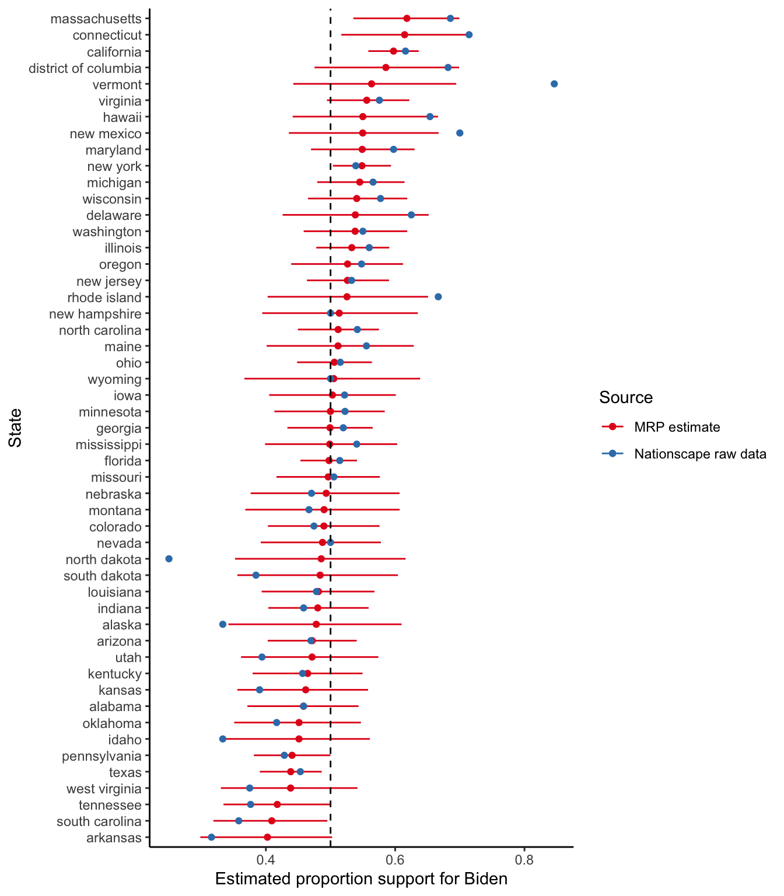

library(arrow)
library(broom.mixed)
library(gutenbergr)
library(haven)
library(knitr)
library(labelled)
library(modelsummary)
library(rstanarm)
library(tidybayes)
library(tidyverse)15 Multilevel regression with post-stratification
Prerequisites
- Read Forecasting elections with non-representative polls, (Wang et al. 2015)
- Discusses the use of MRP on a biased sample drawn from the XBox platform.
- Read Analyzing name changes after marriage using a non-representative survey, (Alexander 2019)
- Implements MRP on a survey and provides detailed code and data.
- Read Mister P helps us understand vaccine hesitancy, (Green 2020)
- Another worked example of MRP with available code and data.
- Watch Statistical Models of Election Outcomes, (Gelman 2020)
- Discussion of building models for elections.
- Listen to Episode 248: Are Democrats being irrational? (David Shor), (Galef 2020)
- Focus on the first half which discusses the use of data in politics, with lessons that are broadly applicable.
Key concepts and skills
- Multilevel regression with post-stratification (MRP) takes a sample, usually a large poll, and uses that to train a model. Then that trained model is applied to a post-stratification dataset, typically a census or other larger sample.
- We use models because we are interested in answering questions that our data alone cannot answer. For instance, we may want to know what is going on in every political district, but it would be too expensive to appropriately poll every district. If we had perfect data, we would not need a model.
- Models allow us to answer some questions, but the trade-off is that we answer them with uncertainty. In the MRP set-up, our model borrows information from areas where we know a lot and uses that in areas where we know little. The degree to which this is appropriate is one aspect we would always like to know more about. One of the main difficulties with MRP is obtaining access to the required datasets.
- The fundamental assumption of MRP is that the relationship between predictors, like gender, age-group, district, etc, and the outcome, for instance, “who are you going to vote for?”, are steady between the sample and the post-stratification dataset. One key question when considering MRP estimates is: “To what extent does that assumption hold?”
- As always, transparency is critical and there should be little reason that data preparation and modeling code cannot be made public alongside the model results even if the survey data cannot. This enables scrutiny from independent experts and enhances the credibility of MRP estimates.
Software and packages
- Base R (R Core Team 2023)
arrow(Richardson et al. 2023)broom.mixed(Bolker and Robinson 2022)gutenbergr(Johnston and Robinson 2022)haven(Wickham, Miller, and Smith 2023)knitr(Xie 2023)labelled(Larmarange 2023)modelsummary(Arel-Bundock 2022)rstanarm(Goodrich et al. 2023)tidybayes(Kay 2022)tidyverse(Wickham et al. 2019)
15.1 Introduction
[The Presidential election of] 2016 was the largest analytics failure in US political history.
David Shor, 13 August 2020
Multilevel regression with post-stratification (MRP) is a popular way to adjust non-representative surveys to analyze opinion and other responses. It uses a regression model to relate individual-level survey responses to various characteristics and then rebuilds the sample to better match the population. In this way MRP can not only allow a better understanding of responses, but also allow us to analyze data that may otherwise be unusable. However, it can be a challenge to get started with MRP as the terminology may be unfamiliar, and the data requirements can be onerous.
Consider a biased survey. For instance, perhaps we conducted a survey about computer preferences at an academic conference, so people with post-graduate degrees are likely over-represented. We are nonetheless interested in making claims about the broader population. Let us say that we found 37.5 per cent of respondents prefer Macs. One way forward is to just ignore the bias and conclude that “37.5 per cent of people prefer Macs”. Another way is to adjust using information that we know. For instance, say 50 per cent of our respondents with a post-graduate degree prefer Macs, and of those without a post-graduate degree, 25 per cent prefer Macs. Then if we knew what proportion of the broader population had a post-graduate degree, say 10 per cent, then we could conduct re-weighting, or post-stratification, to create an estimate: \(0.5 \times 0.1 + 0.25 \times 0.9 = 0.275\). Our estimate would be that 27.5 per cent of people prefer Macs. MRP is a third approach and uses a model to help do that re-weighting. Here we could use logistic regression to estimate the relationship between computer preferences and highest educational attainment in our survey. We then apply that relationship to a dataset that is representative, in terms of education, of our population. One advantage of this is that we can better account for uncertainty. In terms of a real-world example, Clinton, Lapinski, and Trussler (2022) find a substantial difference in telephone response rates between Democrats and Republicans in the 2020 US Presidential election and that when corrected this reduces average polling error.
MRP is a handy approach when dealing with survey data. Hanretty (2020) describes how we use MRP because the alternatives either do badly or are expensive. Essentially, MRP trains a model based on the survey, and then applies that trained model to another dataset. There are two main, related, advantages:
- It can allow us to “re-weight” in a way that brings uncertainty front-of-mind and is not as hamstrung by small samples. The alternative way to deal with having a small sample is to either gather more data or throw it away.
- It can allow us to use broad surveys to speak to subsets in a way that remains representative in certain aspects. For instance, say we gathered a sample that was representative of age, gender, and education across the country. If we were interested in state/provincial-specific estimates there is no guarantee that representativeness would hold at that disaggregated level.
From a practical perspective, it tends to be less expensive to collect non-probability samples and so there are benefits of being able to use these types of data. That said, MRP is not a magic bullet and the laws of statistics still apply. We will have larger uncertainty around our estimates than when using probability samples and they will still be subject to all the usual biases. It is an exciting area of research in both academia and industry.
The workflow that we need for MRP is straight forward, but the details and decisions that have to be made at each step can become overwhelming. The point to keep in mind is that we are trying to create a relationship between two datasets using a statistical model, and so we need to establish similarity between the two datasets in terms of their variables and levels. The steps are:
- gather and prepare the survey dataset, thinking about what is needed for coherence with the post-stratification dataset;
- gather and prepare the post-stratification dataset thinking about what is needed for coherence with the survey dataset;
- model the variable of interest from the survey using predictors and levels that are available in both the survey and the post-stratification datasets;
- apply the model to the post-stratification data.
One famous MRP example is Wang et al. (2015). They used data from the Xbox gaming platform to forecast the 2012 US Presidential Election. Wang et al. (2015) were able to implement an opt-in poll through the Xbox gaming platform during the 45 days leading up to the 2012 US presidential election, which was between Barack Obama and Mitt Romney. Each day there were three to five questions, including voter intention: “If the election were held today, who would you vote for?”. Respondents were allowed to answer at most once per day. And first-time respondents were asked to provide information about themselves, including their sex, race, age, education, state, party ID, political ideology, and who they voted for in the 2008 presidential election.
Shoulders of giants
Dr Andrew Gelman is Higgins Professor of Statistics and Political Science at Columbia University. After earning a PhD in Statistics from Harvard University in 1990, he was appointed as an assistant professor at the University of California, Berkeley, and then moved to Columbia in 1996, where he was promoted to full professor in 2000. His research focuses on statistics, social sciences, and their intersection. For instance, Wang et al. (2015) showed that biased surveys can still have value. He was the principal investigator for Stan, a probabilistic programming language, that is widely used for Bayesian modeling. And he has written many books, with Data Analysis Using Regression and Multilevel/Hierarchical Models (Gelman and Hill 2007) and Bayesian Data Analysis (Gelman et al. [1995] 2014) having been especially influential on a generation of researchers. He was appointed a Fellow of the American Statistical Association in 1998 and awarded the COPSS Presidents’ Award in 2003.
In total, 750,148 interviews were conducted, with 345,858 unique respondents, over 30,000 of whom completed five or more polls. As may be expected, young men dominate the Xbox population: 18-to-29-year-olds comprise 65 per cent of the Xbox dataset, compared to 19 per cent in the exit poll; and men make up 93 per cent of the Xbox sample but only 47 per cent of the electorate.
The details do not matter, but essentially they model how likely a respondent is to vote for Obama, given various information such as state, education, sex, etc. Having a trained model that considers the effect of these various predictors on support for the candidates, they now post-stratify, where each of these “cell-level estimates are weighted by the proportion of the electorate in each cell and aggregated to the appropriate level (i.e., state or national).”
They need cross-tabulated population data which counts the number of people in each combination of variables. In general, the census would have worked, or one of the other large surveys available in the US, such as the ACS, which we introduced in Chapter 6. The difficulty is that the variables need to be available on a cross-tabulated basis. As such, they use exit polls, although these are not as widely available in other countries.
They make state-specific estimates by post-stratifying to the features of each state. And they similarly examine demographic-differences. Finally, they convert their estimates into electoral college estimates.
In general, MRP is a good way to accomplish specific aims, but it is not without trade-offs. If we have a good quality survey, then it may be a way to speak to disaggregated aspects of it. Or if we are concerned about uncertainty then it is a good way to think about that. If we have a biased survey, then it is a great place to start, but it is not a panacea. There is plenty of scope for exciting work from a variety of approaches. For instance, from a more statistical perspective, there is a lot of work to do in terms of thinking through how survey design and modeling approaches interact and the extent to which we are underestimating uncertainty. It is also interesting to think through the implications of small samples and uncertainty in the post-stratification dataset. There is an awful lot to do in terms of thinking through what the appropriate model is to use, and how do we even evaluate what “appropriate” means here, for instance, based on Si (2020). More generally, we have little idea of the conditions under which we will have the stable preferences and relationships that are required for MRP to be accurate. A great deal of work is needed to understand how this relates to uncertainty in survey design, for instance, based on Lauderdale et al. (2020) or Ghitza and Gelman (2020).
In this chapter, we begin with simulating a situation in which we pretend that we know the features of the population. We then consider the US 2020 presidential election.
15.2 Simulated example: coffee or tea?
15.2.1 Construct a population and biased sample
To get started we will harken back to the tea-tasting experiment in Chapter 8 and simulate a population about whether someone prefers coffee or tea. We will then take a biased sample in favor of tea, and use MRP get those population-level preferences back. We will have two explanatory variables. Age-group will be either “young” or “old”, and nationality will be either “United States” or “England”. The simulation will impose an increased chance of preferring tea of the individual is English and/or old. Everything in our population will be roughly balanced, (that is half and half between each of the variables). But our survey will skew older and English. To be clear, in this example we will “know” the “true” features of the population, but this is not something that occurs when we use real data—it is just to help you understand what is happening in MRP.
set.seed(853)
pop_size <- 1000000
sim_population <-
tibble(
age = rbinom(n = pop_size, size = 1, prob = 0.5),
nationality = rbinom(n = pop_size, size = 1, prob = 0.5),
probability = (age + nationality + 0.1) / 2.2, # prevent certainty
prefers_tea = rbinom(n = pop_size, 1, prob = probability)
)
sim_population# A tibble: 1,000,000 × 4
age nationality probability prefers_tea
<int> <int> <dbl> <int>
1 0 1 0.5 0
2 0 0 0.0455 0
3 0 1 0.5 1
4 0 0 0.0455 0
5 0 0 0.0455 0
6 0 0 0.0455 0
7 0 1 0.5 0
8 0 0 0.0455 0
9 0 1 0.5 1
10 0 0 0.0455 0
# ℹ 999,990 more rowsWe can see that the counts, by group, are fairly similar (Table 15.1).
sim_population |>
count(age, nationality, prefers_tea) |>
kable(
col.names = c("Age", "Nationality", "Prefers tea", "Number"),
format.args = list(big.mark = ","),
booktabs = TRUE,
linesep = ""
)| Age | Nationality | Prefers tea | Number |
|---|---|---|---|
| 0 | 0 | 0 | 238,568 |
| 0 | 0 | 1 | 11,319 |
| 0 | 1 | 0 | 125,371 |
| 0 | 1 | 1 | 124,730 |
| 1 | 0 | 0 | 125,438 |
| 1 | 0 | 1 | 124,723 |
| 1 | 1 | 0 | 11,421 |
| 1 | 1 | 1 | 238,430 |
On average, 50 per cent of the population prefers tea, but this preference depends on the population sub-groups.
Now we want to pretend that we have some survey that has a biased sample. We will allow that it over-samples older respondents and English respondents. We are interested in looking at what proportion of our biased sample prefers tea to coffee, and expect, by construction, that it will lean toward tea.
set.seed(853)
tea_sample <-
sim_population |>
slice_sample(n = 1000, weight_by = probability)tea_sample |>
count(age, nationality, prefers_tea) |>
kable(
col.names = c("Age", "Nationality", "Prefers tea", "Number"),
format.args = list(big.mark = ","),
booktabs = TRUE,
linesep = ""
)| Age | Nationality | Prefers tea | Number |
|---|---|---|---|
| 0 | 0 | 0 | 18 |
| 0 | 0 | 1 | 3 |
| 0 | 1 | 0 | 119 |
| 0 | 1 | 1 | 128 |
| 1 | 0 | 0 | 133 |
| 1 | 0 | 1 | 126 |
| 1 | 1 | 0 | 25 |
| 1 | 1 | 1 | 448 |
It is clear that our sample has a different average tea preference than the overall population (Table 15.2).
15.2.2 Model the sample
We now train a model based on the biased survey. We explain tea preferences based on age and national origin. There is nothing that says you have to use a multilevel model, but a lot of situations will have circumstances such that it is not likely to do any worse. To be clear, this means that although we have individual-level data, there is some grouping of the individuals that we will take advantage of.
\[ \begin{aligned} y_i|\pi_i & \sim \mbox{Bern}(\pi_i) \\ \mbox{logit}(\pi_i) & = \beta_0 + \alpha_{a[i]}^{\mbox{age}} + \alpha_{n[i]}^{\mbox{nat}} \\ \alpha_0 & \sim \mbox{Normal}(0, 2.5)\\ \alpha_{a}^{\mbox{age}} & \sim \mbox{Normal}\left(0, \sigma^2_{\mbox{age}}\right)\mbox{ for }a = 1, 2, \dots, A\\ \alpha_{n}^{\mbox{nat}} & \sim \mbox{Normal}\left(0, \sigma^2_{\mbox{nat}}\right)\mbox{ for }n = 1, 2, \dots, N\\ \sigma_{\mbox{age}} & \sim \mbox{Exponential}(1)\\ \sigma_{\mbox{nat}} & \sim \mbox{Exponential}(1) \end{aligned} \]
where \(y_i\) is the tea preference of the respondent, \(\pi_i = \mbox{Pr}(y_i=1)\), and \(\alpha^{\mbox{age}}\) and \(\alpha^{\mbox{nat}}\) are the effect of age and national origin, respectively. The \(a[i]\) and \(n[i]\) refer to which age-group and nationality, respectively, the respondent belongs to. \(A\) and \(N\) are the total number of age-groups and nationalities, respectively. We will estimate the model with stan_glm().
tea_preference_model <-
stan_glmer(
prefers_tea ~ (1 | age) + (1 | nationality),
data = tea_sample,
family = binomial(link = "logit"),
prior = normal(location = 0, scale = 0.5, autoscale = TRUE),
prior_intercept = normal(location = 0, scale = 0.5, autoscale = TRUE),
seed = 853
)
saveRDS(
tea_preference_model,
file = "tea_preference_model.rds"
)tea_preference_model <-
readRDS(file = "tea_preference_model.rds")modelsummary(
list(
"Tea preferences" = tea_preference_model
)
)| Tea preferences | |
|---|---|
| (Intercept) | 0.001 |
| Sigma[age × (Intercept),(Intercept)] | 2.171 |
| Sigma[nationality × (Intercept),(Intercept)] | 2.337 |
| Num.Obs. | 1000 |
| R2 | 0.261 |
| R2 Marg. | 0.000 |
| ICC | 0.7 |
| Log.Lik. | -457.970 |
| ELPD | -461.0 |
| ELPD s.e. | 16.2 |
| LOOIC | 921.9 |
| LOOIC s.e. | 32.4 |
| WAIC | 921.9 |
| RMSE | 0.39 |
Figure 15.1 shows the distribution of draws for each of the different groups.
tea_preference_model |>
spread_draws(`(Intercept)`, b[, group]) |>
mutate(condition_mean = `(Intercept)` + b) |>
ggplot(aes(y = group, x = condition_mean)) +
stat_halfeye() +
theme_minimal()
15.2.3 Post-stratification dataset
Now we will use a post-stratification dataset to get some estimates of the number in each cell. We typically use a larger dataset that may more closely reflect the population. In the US a popular choice is the American Community Survey (ACS) which we covered in Chapter 6, while in other countries we typically use the census.
In this simulated example, we could use the population as our post-stratification dataset. The issue is that at one million observations it is unwieldy, so we take a 10,000 person sample from it. We also remove the tea preferences variable because that is what we are pretending we do not know.
set.seed(853)
tea_poststrat_dataset <-
sim_population |>
slice_sample(n = 10000) |>
select(-prefers_tea)
tea_poststrat_dataset# A tibble: 10,000 × 3
age nationality probability
<int> <int> <dbl>
1 0 1 0.5
2 0 1 0.5
3 0 1 0.5
4 0 1 0.5
5 1 0 0.5
6 1 0 0.5
7 0 0 0.0455
8 1 0 0.5
9 1 0 0.5
10 1 0 0.5
# ℹ 9,990 more rowsThis is an idealized example where we assume individual-level data in our post-stratification dataset. In that world we can apply our model to each individual.
predicted_tea_preference <-
tea_preference_model |>
add_epred_draws(newdata = tea_poststrat_dataset,
value = "preference") |>
ungroup() |>
summarise(
average_preference = mean(preference),
lower = quantile(preference, 0.025),
upper = quantile(preference, 0.975),
.by = c(age, nationality, .row)
)
predicted_tea_preference |>
count(age, nationality, average_preference)# A tibble: 4 × 4
age nationality average_preference n
<int> <int> <dbl> <int>
1 0 0 0.0657 2416
2 0 1 0.528 2505
3 1 0 0.496 2544
4 1 1 0.941 2535Table 15.4 compares the MRP estimates, with the raw estimates from the biased sample. In this case, because we know the truth, we can also compare them to the known truth, but that is not something we can do normally.
comparison <- tibble(
Type = c("Truth", "Biased sample", "MRP estimate"),
Estimate = c(
mean(sim_population$prefers_tea),
mean(tea_sample$prefers_tea),
mean(predicted_tea_preference$average_preference)
)
)
comparison |>
kable(digits = 2,
booktabs = TRUE,
linesep = "")| Type | Estimate |
|---|---|
| Truth | 0.50 |
| Biased sample | 0.70 |
| MRP estimate | 0.51 |
In this case, the MRP approach has done a good job of taking a biased sample and resulting in an estimate of tea preferences that did reflect the truth.
15.3 Forecasting the 2020 United States election
Presidential elections in the United States have many features that are unique to the United States, but the model that we are going to build here will be generalizable to a variety of settings. We will use survey data from the Democracy Fund Voter Study Group introduced in Chapter 8. They conducted polling in the lead-up to the US election and make this publicly available after registration. We will use IPUMS, introduced in Chapter 6, to access the 2019 American Community Survey (ACS) as a post-stratification dataset. We will use state, age-group, gender, and education as explanatory variables.
15.3.1 Survey data
We will use the Democracy Fund Voter Study Group Nationscape survey dataset. One tricky aspect of MRP is ensuring consistency between the survey dataset and the post-stratification dataset. In this case, after reading in the dataset that we cleaned up in Chapter 8 we need to do some work to make the variables consistent.
nationscape_data <-
read_csv(file = "nationscape_data.csv")nationscape_data# A tibble: 5,200 × 5
gender state vote_biden age_group education_level
* <chr> <chr> <dbl> <chr> <chr>
1 female WI 0 45-59 Post sec +
2 female VA 0 45-59 Post sec +
3 female TX 0 60+ High school or less
4 female WA 0 45-59 High school or less
5 female MA 1 18-29 Some post sec
6 female TX 1 30-44 Some post sec
7 female CA 0 60+ Some post sec
8 female NC 0 45-59 Post sec +
9 female MD 0 60+ Post sec +
10 female FL 1 45-59 Some post sec
# ℹ 5,190 more rows# Format state names to match IPUMS
states_names_and_abbrevs <-
tibble(stateicp = state.name, state = state.abb)
nationscape_data <-
nationscape_data |>
left_join(states_names_and_abbrevs, by = "state")
rm(states_names_and_abbrevs)
# Make lowercase to match IPUMS data
nationscape_data <-
nationscape_data |>
mutate(stateicp = tolower(stateicp))
# Replace NAs with DC
nationscape_data$stateicp <-
replace_na(nationscape_data$stateicp, "district of columbia")
# Tidy the class
nationscape_data <-
nationscape_data |>
mutate(across(c(gender, stateicp, education_level, age_group),
as_factor))Finally, we save the prepared dataset as a parquet file.
write_parquet(x = nationscape_data,
sink = "nationscape_data_cleaned.parquet")15.3.2 Post-stratification data
We have many options for a dataset to post-stratify by and there are various considerations. We are after a dataset that is good quality (however that is to be defined), and likely larger. From a strictly data perspective, the best choice would probably be something like the Cooperative Election Study (CES), as used in Chapter 12, but it is only publicly released after the election, which limits the reasonableness of using it for forecasting the election. Wang et al. (2015) use exit poll data, but again that is only available after the election.
We will use the 2019 American Community Survey (ACS) dataset that we gathered in Chapter 6.
poststrat_data# A tibble: 407,354 × 4
gender age_group education_level stateicp
* <fct> <fct> <fct> <fct>
1 male 60+ High school or less alabama
2 male 60+ Some post sec alabama
3 male 18-29 High school or less alabama
4 female 18-29 Some post sec alabama
5 male 30-44 Some post sec alabama
6 female 18-29 High school or less alabama
7 female 60+ High school or less alabama
8 female 18-29 Some post sec alabama
9 male 60+ High school or less alabama
10 male 45-59 High school or less alabama
# ℹ 407,344 more rowsThis dataset is on an individual level. We will create counts of each sub-cell, and then proportions by state.
poststrat_data_cells <-
poststrat_data |>
count(stateicp, gender, age_group, education_level)And finally we add proportions for each of these cells.
poststrat_data_cells <-
poststrat_data_cells |>
mutate(prop = n / sum(n),
.by = stateicp)
poststrat_data_cells# A tibble: 1,627 × 6
stateicp gender age_group education_level n prop
<fct> <fct> <fct> <fct> <int> <dbl>
1 connecticut male 18-29 High school or less 194 0.0419
2 connecticut male 18-29 Some post sec 128 0.0276
3 connecticut male 18-29 Post sec + 72 0.0156
4 connecticut male 18-29 Grad degree 14 0.00302
5 connecticut male 30-44 High school or less 132 0.0285
6 connecticut male 30-44 Some post sec 93 0.0201
7 connecticut male 30-44 Post sec + 147 0.0317
8 connecticut male 30-44 Grad degree 88 0.0190
9 connecticut male 45-59 High school or less 187 0.0404
10 connecticut male 45-59 Some post sec 88 0.0190
# ℹ 1,617 more rows15.3.3 Model the sample
We are going to use logistic regression to estimate a model where the binary of support for Biden versus Trump is explained by gender, age-group, education, and state.
\[ \begin{aligned} y_i|\pi_i & \sim \mbox{Bern}(\pi_i) \\ \mbox{logit}(\pi_i) & = \beta_0+ \alpha_{g[i]}^{\mbox{gender}} + \alpha_{a[i]}^{\mbox{age}} + \alpha_{s[i]}^{\mbox{state}} + \alpha_{e[i]}^{\mbox{edu}} \\ \beta_0 & \sim \mbox{Normal}(0, 2.5)\\ \alpha_{g}^{\mbox{gender}} & \sim \mbox{Normal}(0, 2.5)\mbox{ for }g=1, 2\\ \alpha_{a}^{\mbox{age}} & \sim \mbox{Normal}\left(0, \sigma^2_{\mbox{age}}\right)\mbox{ for }a = 1, 2, \dots, A\\ \alpha_{s}^{\mbox{state}} & \sim \mbox{Normal}\left(0, \sigma^2_{\mbox{state}}\right)\mbox{ for }s = 1, 2, \dots, S\\ \alpha_{e}^{\mbox{edu}} & \sim \mbox{Normal}\left(0, \sigma^2_{\mbox{edu}}\right)\mbox{ for }e = 1, 2, \dots, E\\ \sigma_{\mbox{gender}} & \sim \mbox{Exponential}(1)\\ \sigma_{\mbox{state}} & \sim \mbox{Exponential}(1)\\ \sigma_{\mbox{edu}} & \sim \mbox{Exponential}(1) \end{aligned} \]
where \(y_i\) is whether a respondent supports Biden and \(\pi_i = \mbox{Pr}(y = 1)\). Then \(\alpha^{\mbox{gender}}\), \(\alpha^{\mbox{age}}\), \(\alpha^{\mbox{state}}\), and \(\alpha^{\mbox{edu}}\) are the effect of gender, age, state, and education, respectively. The \(g[i]\), \(a[i]\), \(s[i]\), and \(e[i]\) refer to which gender, age-group, state, and education level, respectively, the respondent belongs to. \(A\), \(S\), and \(E\) are the total number of age-groups, states, and education levels, respectively.
After reading in the data that we cleaned earlier, following Kennedy and Gabry (2020) we use stan_glmer() from rstanarm to estimate the model.
nationscape_data <-
read_parquet(file = "nationscape_data_cleaned.parquet")us_election_model <-
stan_glmer(
vote_biden ~ gender + (1|age_group) + (1|stateicp) + (1|education_level),
data = nationscape_data,
family = binomial(link = "logit"),
prior = normal(location = 0, scale = 2.5, autoscale = TRUE),
prior_intercept = normal(location = 0, scale = 2.5, autoscale = TRUE),
cores = 4,
adapt_delta = 0.99,
seed = 853
)saveRDS(
us_election_model,
file = "us_election_model_mrp.rds"
)This model will take about 15 minutes to run, so you should be careful to save it afterwards with saveRDS(). And you can load it with readRDS().
us_election_model <-
readRDS(file = "us_election_model_mrp.rds")We might be interested to look at the coefficient estimates (Table 15.5).
modelsummary(
us_election_model
)| (1) | |
|---|---|
| (Intercept) | 0.373 |
| gendermale | -0.542 |
| Sigma[stateicp × (Intercept),(Intercept)] | 0.081 |
| Sigma[education_level × (Intercept),(Intercept)] | 0.036 |
| Sigma[age_group × (Intercept),(Intercept)] | 0.241 |
| Num.Obs. | 5200 |
| R2 | 0.056 |
| R2 Marg. | 0.018 |
| ICC | 0.2 |
| Log.Lik. | -3434.075 |
| ELPD | -3468.0 |
| ELPD s.e. | 16.2 |
| LOOIC | 6936.1 |
| LOOIC s.e. | 32.4 |
| WAIC | 6936.0 |
| RMSE | 0.48 |
Figure 15.2 shows the distribution of draws for age groups, and education. We plot some selected states separately for reasons of space (Figure 15.3).
us_election_model |>
spread_draws(`(Intercept)`, b[, group]) |>
mutate(condition_mean = `(Intercept)` + b) |>
separate(col = group,
into = c("type", "instance"),
sep = ":", remove = FALSE) |>
filter(type != "stateicp") |>
ggplot(aes(y = group, x = condition_mean)) +
stat_halfeye() +
theme_minimal()
us_election_model |>
spread_draws(`(Intercept)`, b[, group]) |>
mutate(condition_mean = `(Intercept)` + b) |>
separate(col = group, into = c("type", "instance"), sep = ":", remove = FALSE) |>
filter(type == "stateicp") |>
filter(instance %in%
c("california", "florida", "michigan", "new_york", "pennsylvania",
"vermont", "west_virginia", "wisconsin")
) |>
ggplot(aes(y = group, x = condition_mean)) +
stat_halfeye() +
theme_minimal()
15.3.4 Post-stratify
We now post-stratify according to the population proportions calculated previously, and calculate credible intervals for each state as well.
biden_support_by_state <-
us_election_model |>
add_epred_draws(newdata = poststrat_data_cells) |>
rename(support_biden_predict = .epred) |>
mutate(support_biden_predict_prop = support_biden_predict * prop) |>
ungroup() |>
summarise(support_biden_predict = sum(support_biden_predict_prop),
.by = c(stateicp, .draw)) |>
summarise(
mean = mean(support_biden_predict),
lower = quantile(support_biden_predict, 0.025),
upper = quantile(support_biden_predict, 0.975),
.by = stateicp
)
head(biden_support_by_state)# A tibble: 6 × 4
stateicp mean lower upper
<fct> <dbl> <dbl> <dbl>
1 connecticut 0.624 0.284 0.884
2 maine 0.535 0.211 0.840
3 massachusetts 0.623 0.292 0.884
4 new hampshire 0.531 0.201 0.834
5 rhode island 0.540 0.206 0.841
6 vermont 0.582 0.256 0.872And we can have a look at our estimates graphically (Figure 15.4).
biden_support_by_state |>
ggplot(aes(y = mean, x = fct_reorder(stateicp, mean),
color = "MRP estimate")) +
geom_point() +
geom_errorbar(aes(ymin = lower, ymax = upper), width = 0) +
geom_point(
data = nationscape_data |>
summarise(n = n(),
.by = c(stateicp, vote_biden)) |>
mutate(prop = n / sum(n),
.by = stateicp) |>
filter(vote_biden == 1),
aes(y = prop, x = stateicp, color = "Nationscape raw data")
) +
geom_hline(yintercept = 0.5, linetype = "dashed") +
labs(
x = "State",
y = "Estimated proportion support for Biden",
color = "Source"
) +
theme_classic() +
scale_color_brewer(palette = "Set1") +
coord_flip() +
theme(legend.position = "bottom")
The Nationscape dataset is a high-quality survey. But it was weighted to major census region—the West, the Midwest, the Northeast, and the South—rather than state, which could be one reason we see a difference between the MRP estimates and the raw data.
15.4 Exercises
Scales
- (Plan) Consider the following scenario: Support for a political party is a binary (yes/no), and is related to age-group, gender, income group, and highest education. Please sketch out what that dataset could look like and then sketch a graph that you could build to show all observations.
- (Simulate) Please further consider the scenario described and simulate the situation. Please include at least ten tests based on the simulated data.
- (Acquire) Please describe one possible source of such a dataset.
- (Explore) Please use
ggplot2to build the graph that you sketched. Userstanarmto estimate a model. - (Communicate) Please write two paragraphs about what you did.
Questions
- Please explain what MRP is, and the strengths and weaknesses, being sure to explain any technical terms that you use (write at least three paragraphs).
- What are three aspects that you like about Wang et al. (2015)? What are three aspects that do you not? To what extent is it possible to reproduce the paper?
- With respect to Wang et al. (2015), what is a weakness of MRP (pick one)?
- Detailed data requirement.
- Allows use of biased data.
- Expensive to conduct.
- With respect to Wang et al. (2015), what is concerning about the Xbox sample (pick one)?
- Non-representative.
- Small sample size.
- Multiple responses from the same respondent.
- We are interested in studying how voting intentions in the 2020 US presidential election vary by an individual’s income. We set up a logistic regression model to study this relationship. In this study, what are some possible predictors (select all that apply)?
- Whether the respondent is registered to vote (yes/no).
- Whether the respondent is going to vote for Biden (yes/no).
- The race of the respondent (white/not white).
- The respondent’s marital status (married/not).
- Please think about Cohn (2016). Why is this type of exercise not carried out more? Why do you think that different groups, even with the same background and level of quantitative sophistication, could have such different estimates even when they use the same data?
- We train a model based on a survey, and then post-stratify it using the ACS dataset. What are some of the practical considerations that we may have to contend with when doing this?
- Consider a situation in which you have a survey dataset with these age-groups: 18-29; 30-44; 45-60; and 60+. And a post-stratification dataset with these age-groups: 18-34; 35-49; 50-64; and 65+. Please write about the approach you would take to bringing these together.
Tutorial
In a similar manner to Ghitza and Gelman (2020) pretend you have access to a US voter file record from a private company. You train a model on the 2020 US Cooperative Election Study, and post-stratify it, on an individual basis, based on that voter file.
- Put together a datasheet for the voter file dataset following Gebru et al. (2021)? As a reminder, datasheets accompany datasets and document “motivation, composition, collection process, recommended uses,” among other aspects.
- Create a model card for your model, following Mitchell et al. (2019)? As a reminder, model cards are deliberately straight forward one- or two-page documents that report aspects such as: model details; intended use; metrics; training data; ethical considerations; as well as caveats and recommendations (Mitchell et al. 2019).
- Discuss three ethical aspects around the features that you are using in your model? [Please write a paragraph or two for each point.]
- Detail the protections that you would put in place in terms of the dataset, the model, and the predictions?
Paper
At about this point the Spofforth Paper from Online Appendix D would be appropriate.